Bows¶
Every item of this type that can have properties, and the passives that work with it. All item bases: Item bases.
A bow fires arrows after drawing. Drawing improves the shot up to full draw, and holding a drawn bow spends stamina.
Items (12)¶
| Name | Stats | Crafted at | Item level | |
|---|---|---|---|---|
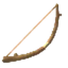 |
Crude Bow | Pierce 22 | Workbench | Meadows |
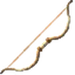 |
Finewood Bow | Pierce 32 | Workbench | Black Forest |
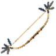 |
Huntsman Bow | Pierce 42 | Forge | Swamp |
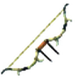 |
Draugr Fang | Pierce 47, Poison 5 | Forge | Mountain |
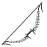 |
Spinesnap | Pierce 72, Spirit 5 | Black Forge | Mistlands |
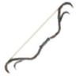 |
Ash Fang | Pierce 82 | Black Forge | Ashlands |
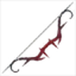 |
Blood Fang | Pierce 82 | Black Forge | Ashlands |
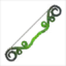 |
Root Fang | Pierce 82, Poison 10 | Black Forge | Ashlands |
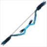 |
Storm Fang | Pierce 82, Lightning 10 | Black Forge | Ashlands |
| Frostfire Bow | Pierce 68, Fire 12, Frost 88, Spirit 10 | Black Forge | Deep North | |
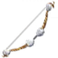 |
Nord Bow | Pierce 100, Spirit 10 | Black Forge | Deep North |
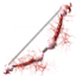 |
Thunderblood Bow | Pierce 110, Lightning 45, Spirit 10 | Black Forge | Deep North |
Passives¶
Nodes of this weapon's branches in the passive tree, and nodes and mastery options whose bonuses name this weapon.
Notables (18)¶
| Name | Effect | |
|---|---|---|
| Arrow Above the Heather | 10% increased bow projectile speed | |
| Bending Ash | 10% increased bow draw and reload speed 5% reduced bow draw stamina cost |
|
| Bowstring Song | 10% increased bow projectile speed 0.5% increased bow draw and reload speed per 20 points of "Dexterity" |
|
| Distant Flight | 20% increased arrow and bolt range +20% bow additional projectile chance 10% increased shooting effective range |
|
| Falcon's Eye | 30% increased bow critical strike chance +20% bow critical strike damage |
|
| Feather in the Wind | 10% increased bow projectile speed | |
| Fletched Fortune | +20% bow additional projectile chance | |
| Gaze Through the Mist | 10% increased bow shot accuracy 30% increased bow critical strike chance |
|
| Hunter's Arrowhead | 40% increased ailment build-up with bows | |
| Last Draw | 20% increased bow draw and reload speed on dodge recently | |
| Patient Hunter | 12% increased shooting effective range | |
| Point Blank | 12% increased shooting effective range | |
| Raven's Eye | 10% increased shot accuracy 35% increased bow damage |
|
| Steady Shot | 12% increased shooting effective range | |
| Stout Bowstring | 35% increased bow damage 10% increased bow draw and reload speed 10% reduced bow stamina cost |
|
| Twin Nocks | 10% increased shot accuracy +20% bow additional projectile chance |
|
| Ullr's Draw | 20% increased damage 10% increased draw and reload speed +15 Dexterity |
|
| Wanderer's Bow | 35% increased bow damage 10% reduced bow stamina cost |
Masteries (3)¶
| Option | Effect | |
|---|---|---|
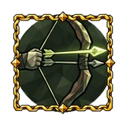 |
Charged Volley | +1 bow projectiles per shot or throw with charged attacks |
| Hold the Draw | Drawing a bow while airborne suspends you until 0.3 s after the shot Hovering costs 8 stamina per second While drawing a bow in the air you hover, spending stamina. Releasing the string or a dodge roll ends the hover. |
|
| Keep the Tension | A dodge roll keeps the draw you reached on your bow; holding it still drains stamina. |
Small passives¶
| Stat | Nodes |
|---|---|
| 5% increased shooting effective range | 9 |
| 4% increased bow draw and reload speed | 8 |
| 4% increased bow projectile speed | 5 |
| 4% increased shot accuracy | 4 |
| +8% bow critical strike damage | 4 |
| 4% increased crossbow reload speed | 4 |
| 4% increased draw and reload speed | 3 |
| 16% increased ailment build-up with bows | 3 |
| +8% bow additional projectile chance | 3 |
| 8% increased arrow and bolt range | 2 |
| 4% increased shooting effective range | 2 |
| 12% increased bow critical strike chance | 2 |
| 4% reduced bow draw stamina cost | 2 |
| 4% increased bow shot accuracy | 1 |
| 4% reduced bow stamina cost | 1 |
| 12% increased bow damage | 1 |
Data from Path of Valheiman 5.3.2, extracted 2026-10-24.